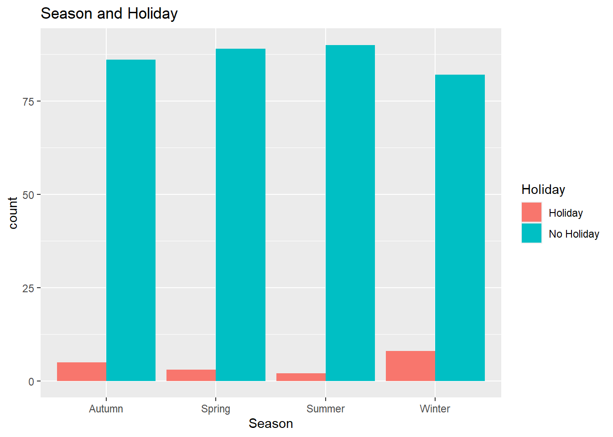
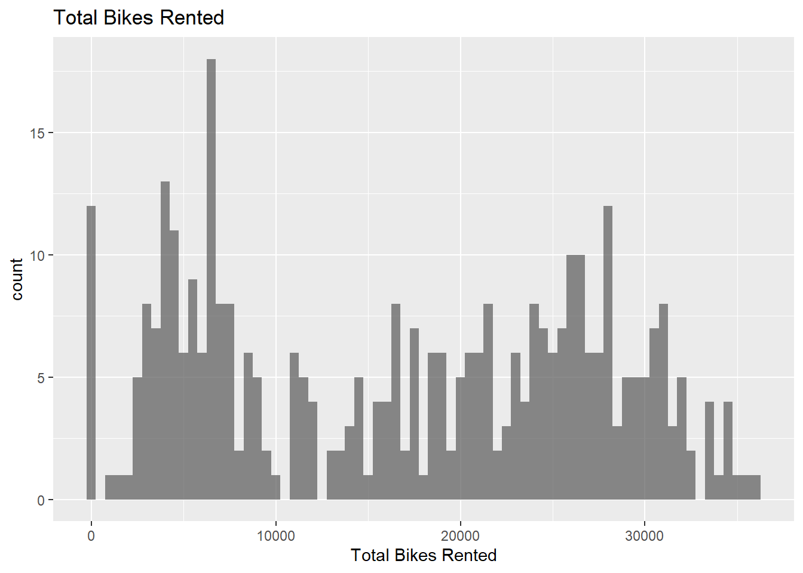

library(tidyverse)
library(lubridate)
library(tidymodels)Basic Modeling
Reading in Data
Here I am using encoding = “EUC-KR” to deal with the file that includes non-ASCII characters such as “Temperature(캜)”.
bike_data <- readr::read_csv("SeoulBikeData.csv", locale = readr::locale(encoding = "EUC-KR"))Rows: 8760 Columns: 14
── Column specification ────────────────────────────────────────────────────────
Delimiter: ","
chr (4): Date, Seasons, Holiday, Functioning Day
dbl (10): Rented Bike Count, Hour, Temperature(캜), Humidity(%), Wind speed (...
ℹ Use `spec()` to retrieve the full column specification for this data.
ℹ Specify the column types or set `show_col_types = FALSE` to quiet this message.Renaming variables so they are easy to use, changing certain variables to factors, and adjusting the date format so that all column types are as they should be.
bike_data <- bike_data |>
rename("date" = "Date",
"rent_bike" = "Rented Bike Count",
"hour" = "Hour",
"temp" = "Temperature(캜)",
"humid" = "Humidity(%)",
"wind" = "Wind speed (m/s)",
"vis" = "Visibility (10m)",
"dew_point" = "Dew point temperature(캜)",
"solar_rad" = "Solar Radiation (MJ/m2)",
"rain" = "Rainfall(mm)",
"snow" = "Snowfall (cm)",
"season" = "Seasons",
"holiday" = "Holiday",
"fun_day" = "Functioning Day") |>
mutate(across(c(season, holiday, fun_day), as.factor), date = dmy(date))
bike_data# A tibble: 8,760 × 14
date rent_bike hour temp humid wind vis dew_point solar_rad rain
<date> <dbl> <dbl> <dbl> <dbl> <dbl> <dbl> <dbl> <dbl> <dbl>
1 2017-12-01 254 0 -5.2 37 2.2 2000 -17.6 0 0
2 2017-12-01 204 1 -5.5 38 0.8 2000 -17.6 0 0
3 2017-12-01 173 2 -6 39 1 2000 -17.7 0 0
4 2017-12-01 107 3 -6.2 40 0.9 2000 -17.6 0 0
5 2017-12-01 78 4 -6 36 2.3 2000 -18.6 0 0
6 2017-12-01 100 5 -6.4 37 1.5 2000 -18.7 0 0
7 2017-12-01 181 6 -6.6 35 1.3 2000 -19.5 0 0
8 2017-12-01 460 7 -7.4 38 0.9 2000 -19.3 0 0
9 2017-12-01 930 8 -7.6 37 1.1 2000 -19.8 0.01 0
10 2017-12-01 490 9 -6.5 27 0.5 1928 -22.4 0.23 0
# ℹ 8,750 more rows
# ℹ 4 more variables: snow <dbl>, season <fct>, holiday <fct>, fun_day <fct>EDA
Checking for missing values, there does not appear to be any.
sum_na <- function(column){
sum(is.na(column))
}
na_counts <- bike_data |>
summarize(across(everything(), sum_na))
na_counts# A tibble: 1 × 14
date rent_bike hour temp humid wind vis dew_point solar_rad rain snow
<int> <int> <int> <int> <int> <int> <int> <int> <int> <int> <int>
1 0 0 0 0 0 0 0 0 0 0 0
# ℹ 3 more variables: season <int>, holiday <int>, fun_day <int>Basic summary stats for numeric variables and unique values and counts for character variables. It appears that bike rental counts have a standard deviation that’s almost the same values as the mean.
bike_summary <- bike_data |>
summarize(across(where(is.numeric),list(mean = mean,
median = median,
min = min,
max = max,
sd = sd)),
across(where(is.factor), ~ length(unique(.)),.names = "unique_{.col}")
)
bike_summary# A tibble: 1 × 53
rent_bike_mean rent_bike_median rent_bike_min rent_bike_max rent_bike_sd
<dbl> <dbl> <dbl> <dbl> <dbl>
1 705. 504. 0 3556 645.
# ℹ 48 more variables: hour_mean <dbl>, hour_median <dbl>, hour_min <dbl>,
# hour_max <dbl>, hour_sd <dbl>, temp_mean <dbl>, temp_median <dbl>,
# temp_min <dbl>, temp_max <dbl>, temp_sd <dbl>, humid_mean <dbl>,
# humid_median <dbl>, humid_min <dbl>, humid_max <dbl>, humid_sd <dbl>,
# wind_mean <dbl>, wind_median <dbl>, wind_min <dbl>, wind_max <dbl>,
# wind_sd <dbl>, vis_mean <dbl>, vis_median <dbl>, vis_min <dbl>,
# vis_max <dbl>, vis_sd <dbl>, dew_point_mean <dbl>, …Exploring contingency tables for categorical variables. Going to remove the rows that fall under a “no functional hours” day.
season_count <- table(bike_data$season)
season_count
Autumn Spring Summer Winter
2184 2208 2208 2160 holiday_count <- table(bike_data$holiday)
holiday_count
Holiday No Holiday
432 8328 fun_count <- table(bike_data$fun_day)
fun_count
No Yes
295 8465 Creating the final dataset by grouping by selected variables, and using the sum or mean of other variables.
bike_data <- bike_data |>
filter(fun_day != "no") |>
group_by(date, season, holiday) |>
summarize(total_rent_bike = sum(rent_bike),
total_rain = sum(rain),
total_snow = sum(snow),
mean_temp = mean(temp),
mean_humid = mean(humid),
mean_wind = mean(wind),
mean_vis = mean(vis),
mean_dew_point = mean(dew_point),
mean_solar_rad = mean(solar_rad))`summarise()` has grouped output by 'date', 'season'. You can override using
the `.groups` argument.bike_data# A tibble: 365 × 12
# Groups: date, season [365]
date season holiday total_rent_bike total_rain total_snow mean_temp
<date> <fct> <fct> <dbl> <dbl> <dbl> <dbl>
1 2017-12-01 Winter No Holiday 9539 0 0 -2.45
2 2017-12-02 Winter No Holiday 8523 0 0 1.32
3 2017-12-03 Winter No Holiday 7222 4 0 4.88
4 2017-12-04 Winter No Holiday 8729 0.1 0 -0.304
5 2017-12-05 Winter No Holiday 8307 0 0 -4.46
6 2017-12-06 Winter No Holiday 6669 1.3 8.6 0.0458
7 2017-12-07 Winter No Holiday 8549 0 10.4 1.09
8 2017-12-08 Winter No Holiday 8032 0 0 -3.82
9 2017-12-09 Winter No Holiday 7233 0 0 -0.846
10 2017-12-10 Winter No Holiday 3453 4.1 32.5 1.19
# ℹ 355 more rows
# ℹ 5 more variables: mean_humid <dbl>, mean_wind <dbl>, mean_vis <dbl>,
# mean_dew_point <dbl>, mean_solar_rad <dbl>Recreating summary stats on final dataset.
final_summary <- bike_data |>
summarize(across(where(is.numeric),list(mean = mean,
median = median,
min = min,
max = max,
sd = sd)),
across(where(is.factor), ~ length(unique(.)),.names = "unique_{.col}")
)`summarise()` has grouped output by 'date'. You can override using the
`.groups` argument.final_summary# A tibble: 365 × 48
# Groups: date [365]
date season total_rent_bike_mean total_rent_bike_median
<date> <fct> <dbl> <dbl>
1 2017-12-01 Winter 9539 9539
2 2017-12-02 Winter 8523 8523
3 2017-12-03 Winter 7222 7222
4 2017-12-04 Winter 8729 8729
5 2017-12-05 Winter 8307 8307
6 2017-12-06 Winter 6669 6669
7 2017-12-07 Winter 8549 8549
8 2017-12-08 Winter 8032 8032
9 2017-12-09 Winter 7233 7233
10 2017-12-10 Winter 3453 3453
# ℹ 355 more rows
# ℹ 44 more variables: total_rent_bike_min <dbl>, total_rent_bike_max <dbl>,
# total_rent_bike_sd <dbl>, total_rain_mean <dbl>, total_rain_median <dbl>,
# total_rain_min <dbl>, total_rain_max <dbl>, total_rain_sd <dbl>,
# total_snow_mean <dbl>, total_snow_median <dbl>, total_snow_min <dbl>,
# total_snow_max <dbl>, total_snow_sd <dbl>, mean_temp_mean <dbl>,
# mean_temp_median <dbl>, mean_temp_min <dbl>, mean_temp_max <dbl>, …Exploring plots to see relationships. It makes sense that we see the most bikes being rented in summer months.
ggplot(data = bike_data, aes(x = season, fill = holiday)) +
geom_bar(position = "dodge") +
labs(x = "Season", title = "Season and Holiday") +
scale_fill_discrete("Holiday")
ggplot(data = bike_data, aes(x = total_rent_bike)) +
geom_histogram(binwidth = 500, alpha = 0.7) +
labs(x = "Total Bikes Rented", title = "Total Bikes Rented") 
ggplot(data = bike_data, aes(x = total_rent_bike, y = mean_temp, color = season)) +
geom_point() +
labs(x = "Total Bikes Rented", y = "Mean Temperature", title = "Bikes Rented and Temperature by Season") +
scale_color_discrete("Season")ggplot(data = bike_data, aes(x = total_rent_bike, y = mean_vis, color = season)) +
geom_point() +
labs(x = "Total Bikes Rented", y = "Mean Visibility", title = "Bikes Rented and Visibility by Season") +
scale_color_discrete("Season")Finding correlation between numeric variables.Beyone dew point and temperature (which is expected to have a high correlation) none of the variables have a particularly strong positive or negative correlation.
num_data <- bike_data |>
ungroup() |>
select(where(is.numeric))
cor_mat <- cor(num_data, use = "complete.obs")
cor_mat total_rent_bike total_rain total_snow mean_temp mean_humid
total_rent_bike 1.00000000 -0.21425244 -0.24083601 0.69982423 0.02815752
total_rain -0.21425244 1.00000000 -0.02249252 0.13981161 0.52824072
total_snow -0.24083601 -0.02249252 1.00000000 -0.26795142 0.06424711
mean_temp 0.69982423 0.13981161 -0.26795142 1.00000000 0.40146073
mean_humid 0.02815752 0.52824072 0.06424711 0.40146073 1.00000000
mean_wind -0.17485945 -0.08107366 0.02079190 -0.25895565 -0.22416837
mean_vis 0.14537586 -0.21828398 -0.10129611 0.01057752 -0.55648011
mean_dew_point 0.60264807 0.26064386 -0.21082326 0.96261370 0.63026510
mean_solar_rad 0.68406924 -0.32323141 -0.23149054 0.54348190 -0.27353406
mean_wind mean_vis mean_dew_point mean_solar_rad
total_rent_bike -0.17485945 0.14537586 0.6026481 0.6840692
total_rain -0.08107366 -0.21828398 0.2606439 -0.3232314
total_snow 0.02079190 -0.10129611 -0.2108233 -0.2314905
mean_temp -0.25895565 0.01057752 0.9626137 0.5434819
mean_humid -0.22416837 -0.55648011 0.6302651 -0.2735341
mean_wind 1.00000000 0.19038959 -0.2841044 0.1076893
mean_vis 0.19038959 1.00000000 -0.1458334 0.2646339
mean_dew_point -0.28410440 -0.14583339 1.0000000 0.3774974
mean_solar_rad 0.10768927 0.26463391 0.3774974 1.0000000Splitting the Data
Using functions from tidymodels to split the data and add in the stratification. Then applying 10-fold cross validation to the training set.
bike_split <- initial_split(bike_data, prop = 0.75, strata = season)
bike_train <- training(bike_split)
bike_test <- testing(bike_split)
bike_10_fold <- vfold_cv(bike_train, 10)Fitting MLR Models
Creating the first recipe.
bike_recipe1 <-recipe(total_rent_bike ~ ., data = bike_data) |>
update_role(date, new_role = "ID") |>
step_mutate(day_type = factor(if_else(date %>% lubridate::wday(label = TRUE) %in% c("Sun", "Sat"), "weekend", "weekday"))) |>
step_normalize(total_rain,
total_snow,
mean_temp,
mean_humid,
mean_wind,
mean_vis,
mean_dew_point,
mean_solar_rad) |>
step_dummy(season, holiday, day_type)
bike_recipe1── Recipe ──────────────────────────────────────────────────────────────────────── Inputs Number of variables by roleoutcome: 1
predictor: 10
ID: 1── Operations • Variable mutation for: factor(if_else(date %>% lubridate::wday(label = TRUE)
%in% c("Sun", "Sat"), "weekend", "weekday"))• Centering and scaling for: total_rain, total_snow, mean_temp, ...• Dummy variables from: season, holiday, day_typeCreating the second recipe, adding in interactions.
bike_recipe2 <- recipe(total_rent_bike ~ ., data = bike_data) |>
update_role(date, new_role = "ID") |>
step_mutate(day_type = factor(if_else(date %>% lubridate::wday(label = TRUE) %in% c("Sun", "Sat"), "weekend", "weekday"))) |>
step_normalize(total_rain,
total_snow,
mean_temp,
mean_humid,
mean_wind,
mean_vis,
mean_dew_point,
mean_solar_rad) |>
step_dummy(season, holiday, day_type) |>
step_interact(terms = ~ starts_with("season")*starts_with("holiday")) |>
step_interact(terms = ~ starts_with("season")*mean_temp) |>
step_interact(terms = ~ mean_temp*total_rain)
bike_recipe2── Recipe ──────────────────────────────────────────────────────────────────────── Inputs Number of variables by roleoutcome: 1
predictor: 10
ID: 1── Operations • Variable mutation for: factor(if_else(date %>% lubridate::wday(label = TRUE)
%in% c("Sun", "Sat"), "weekend", "weekday"))• Centering and scaling for: total_rain, total_snow, mean_temp, ...• Dummy variables from: season, holiday, day_type• Interactions with: starts_with("season") * starts_with("holiday")• Interactions with: starts_with("season") * mean_temp• Interactions with: mean_temp * total_rainCreating the third recipe, adding in the quadratic terms.
bike_recipe3 <- recipe(total_rent_bike ~ ., data = bike_data) |>
update_role(date, new_role = "ID") |>
step_mutate(day_type = factor(if_else(date %>% lubridate::wday(label = TRUE) %in% c("Sun", "Sat"), "weekend", "weekday"))) |>
step_normalize(total_rain,
total_snow,
mean_temp,
mean_humid,
mean_wind,
mean_vis,
mean_dew_point,
mean_solar_rad) |>
step_dummy(season, holiday, day_type) |>
step_interact(terms = ~ starts_with("season")*starts_with("holiday")) |>
step_interact(terms = ~ starts_with("season")*mean_temp) |>
step_interact(terms = ~ mean_temp*total_rain) |>
step_poly(total_rain,
total_snow,
mean_temp,
mean_humid,
mean_wind,
mean_vis,
mean_dew_point,
mean_solar_rad,
degree = 2)
bike_recipe3── Recipe ──────────────────────────────────────────────────────────────────────── Inputs Number of variables by roleoutcome: 1
predictor: 10
ID: 1── Operations • Variable mutation for: factor(if_else(date %>% lubridate::wday(label = TRUE)
%in% c("Sun", "Sat"), "weekend", "weekday"))• Centering and scaling for: total_rain, total_snow, mean_temp, ...• Dummy variables from: season, holiday, day_type• Interactions with: starts_with("season") * starts_with("holiday")• Interactions with: starts_with("season") * mean_temp• Interactions with: mean_temp * total_rain• Orthogonal polynomials on: total_rain, total_snow, mean_temp, ...Setting up the linear model fit and fitting the models to determine best performance. It appears that model 3 has a smaller RMSE and high R-squared value so that would be the best fit.
bike_mod <- linear_reg() |>
set_engine("lm")
bike_wfl <- workflow() |>
add_recipe(bike_recipe1) |>
add_model(bike_mod) |>
fit_resamples(bike_10_fold)
bike_wfl2 <- workflow() |>
add_recipe(bike_recipe2) |>
add_model(bike_mod)|>
fit_resamples(bike_10_fold)→ A | warning: prediction from a rank-deficient fit may be misleadingThere were issues with some computations A: x1There were issues with some computations A: x8There were issues with some computations A: x10bike_wfl3 <- workflow() |>
add_recipe(bike_recipe3) |>
add_model(bike_mod)|>
fit_resamples(bike_10_fold)→ A | warning: prediction from a rank-deficient fit may be misleadingrbind(bike_wfl |> collect_metrics() |> mutate(workflow = "bike_wfl1"),
bike_wfl2 |> collect_metrics() |> mutate(workflow = "bike_wfl2"),
bike_wfl3 |> collect_metrics() |> mutate(workflow = "bike_wfl3"))# A tibble: 6 × 7
.metric .estimator mean n std_err .config workflow
<chr> <chr> <dbl> <int> <dbl> <chr> <chr>
1 rmse standard 5371. 10 373. Preprocessor1_Model1 bike_wfl1
2 rsq standard 0.710 10 0.0509 Preprocessor1_Model1 bike_wfl1
3 rmse standard 6307. 10 1646. Preprocessor1_Model1 bike_wfl2
4 rsq standard 0.723 10 0.0663 Preprocessor1_Model1 bike_wfl2
5 rmse standard 6035. 10 1404. Preprocessor1_Model1 bike_wfl3
6 rsq standard 0.725 10 0.0662 Preprocessor1_Model1 bike_wfl3Using the chosen model on the full training and test data.
bike_wfl3 <- workflow() |>
add_recipe(bike_recipe3) |>
add_model(bike_mod)
final_fit <- last_fit(bike_wfl3, bike_split)→ A | warning: prediction from a rank-deficient fit may be misleadingfinal_metrics <- final_fit |> collect_metrics()
final_metrics# A tibble: 2 × 4
.metric .estimator .estimate .config
<chr> <chr> <dbl> <chr>
1 rmse standard 6259. Preprocessor1_Model1
2 rsq standard 0.618 Preprocessor1_Model1final_model <- final_fit |>
extract_fit_parsnip()
model_coef <- tidy(final_model)
model_coef# A tibble: 32 × 5
term estimate std.error statistic p.value
<chr> <dbl> <dbl> <dbl> <dbl>
1 (Intercept) 18008. 3073. 5.86 0.0000000151
2 season_Spring -2606. 4123. -0.632 0.528
3 season_Summer 14849. 6589. 2.25 0.0251
4 season_Winter 2278. 15600. 0.146 0.884
5 holiday_No.Holiday 2626. 2872. 0.915 0.361
6 day_type_weekend -1734. 681. -2.55 0.0115
7 season_Spring_x_holiday_No.Holiday -508. 4206. -0.121 0.904
8 season_Summer_x_holiday_No.Holiday 2231. 5667. 0.394 0.694
9 season_Winter_x_holiday_No.Holiday -9305. 15572. -0.598 0.551
10 season_Spring_x_mean_temp 8181. 4092. 2.00 0.0467
# ℹ 22 more rows